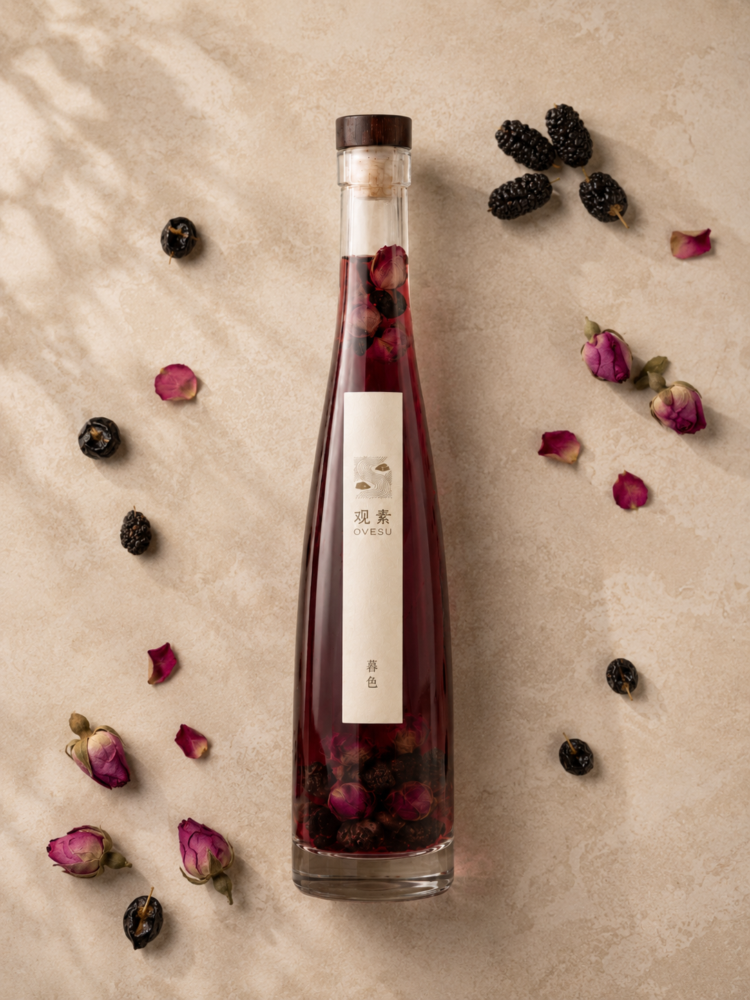
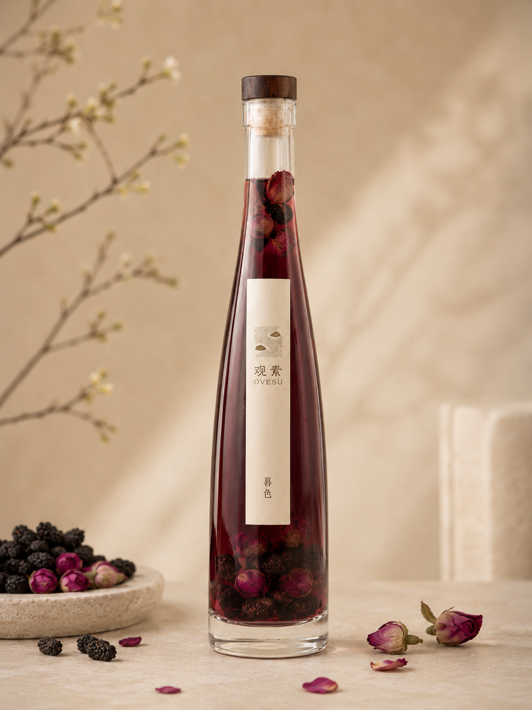
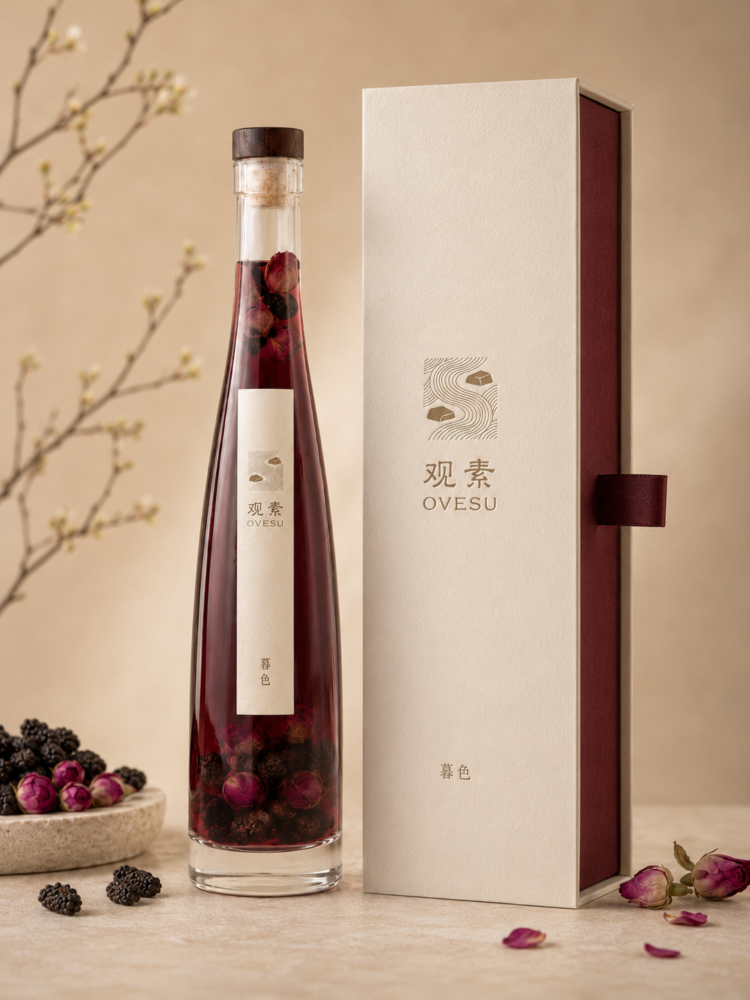
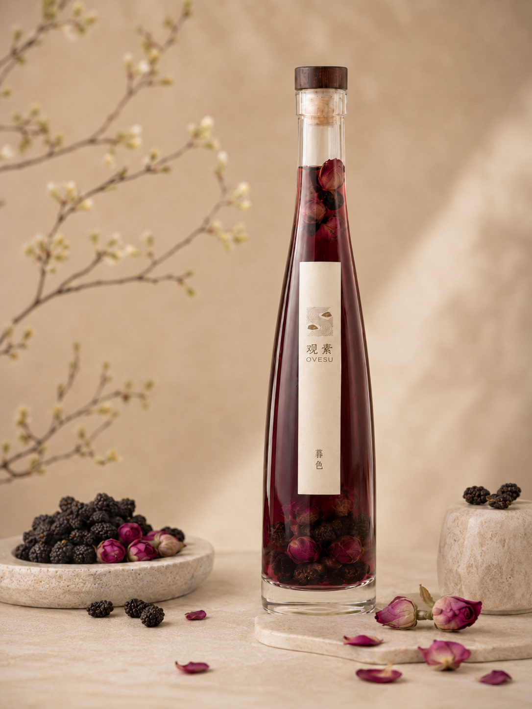

酸枣仁玫瑰酒
暮色
给夜晚的一点温柔，让情绪慢慢落回身体里。
暮色写给不必热闹的夜晚。玫瑰先打开情绪，桑椹承接入口的浆果酸甜， 酸枣仁把酒体往后收，留下安静、柔软、很东方的尾韵。
风味层次宝石红酒液，花香柔和。微酸轻甜，关键不在于甜，而在于入口的“软”。
草本初衷酸枣仁定下安静的气质，重瓣红玫瑰负责馥郁花香，桑椹的浆果气息让草本变得更易亲近。
情绪场景精神消耗过后的独处时刻。帮助紧绷的神经从兴奋切换至放松，给夜晚一点温柔的过渡。
核心草木酸枣仁 / 重瓣红玫瑰 / 桑椹
草木寻迹山野枣林 / 玫瑰花田
酒体视觉宝石红透，轻盈如珀
岁月沉淀鲜果浸润，花酿慢萃
酒精度12% Vol.
适用器皿玻璃高脚杯 / 敞口冰球杯